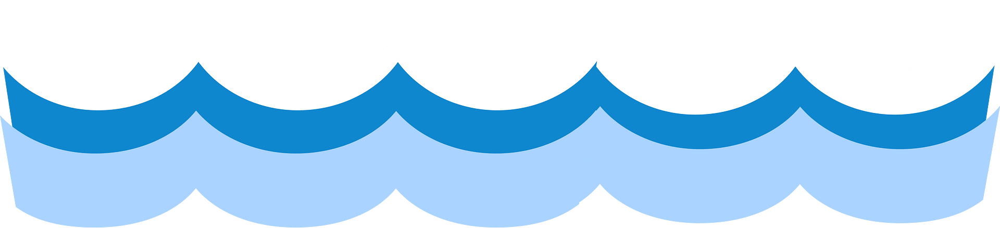

Welcome to Rafting for Fun and Pleasure, where we take 'going with the flow' to exhilarating new depths! Our rivers aren't just waterways; they're nature's wildest rollercoasters, ready to plunge you into a symphony of splashes and adrenaline. Whether you're a thrill-seeking daredevil or a first-time floater, our expert guides ensure your journey is as smooth as a rocky riverbed.


Forget your troubles as you navigate rapids that make Monday mornings seem tame and weekend warriors beg for mercy. Join us for a splash of laughter, a dash of thrill, and an unforgettable plunge into pure, unbridled adventure. Book your spot today and let's make waves together!